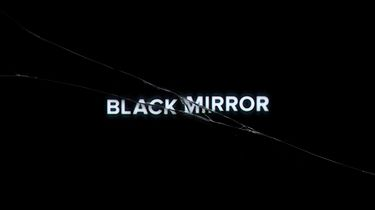

Tudo sobre Black Mirror
Black Mirror é uma série de televisão britânica antológica de ficção científica criada por
Charlie Brooker e centrada em
temas obscuros e satíricos que examinam a sociedade moderna, particularmente a respeito das
consequências imprevistas
das novas tecnologias. Os episódios são trabalhos autônomos, que geralmente se passam em um presente
alternativo ou
em um futuro próximo. A série foi transmitida pela primeira vez na emissora Channel 4, no Reino Unido,
em dezembro de
2011. Em setembro de 2015, a Netflix comprou a
série, encomendando uma terceira temporada de 12 episódios, no
entanto, os episódios encomendados foram divididos em duas temporadas de seis episódios; a quarta
temporada foi lançada
na Netflix em 29 de dezembro de 2017. Em 5 de março de 2018, a Netflix confirmou a quinta temporada da série, que foi
lançada em 5 de junho de 2019.
Sobre o conteúdo e a estrutura da série, Charlie Brooker disse que "cada episódio tem um elenco
diferente, um cenário
diferente, até mesmo uma realidade diferente, mas todos se tratam da forma que vivemos agora — e da
forma que podemos
estar vivendo daqui a 10 minutos se formos desastrados". A série recebeu aclamação da crítica e aumento
de interesse
internacionalmente (principalmente nos Estados Unidos), depois de ter sido adicionada à Netflix.
Produção
Desenvolvimento
Em 2013, Robert Downey Jr. optou pelo episódio "The Entire History of You" (escrito por Jesse Armstrong)
em uma escolha
de qual episódio seria transformado em um filme pela Warner Bros. e pela sua própria empresa de
produção, Team
Downey.
Em setembro de 2015, a Netflix encomendou uma terceira temporada de 12 episódios, que foi dividida em
duas
temporadas de seis episódios. O elenco da terceira temporada inclui Bryce Dallas Howard, Alice Eve,
James Norton,
Cherry Jones, Wyatt Russell, Alex Lawther, Jerome Flynn, Gugu Mbatha-Raw, Mackenzie Davis, Michael
Kelly, Malachi Kirby,
Kelly Macdonald e Faye Marsay. Os diretores da terceira temporada incluem Joe Wright, Jakob Verbruggen,
James Hawes e Dan Trachtenberg. A terceira temporada foi lançada na Netflix em 21 de outubro de 2016. A
emissora Channel 4 não exibiu a terceira temporada, pois a Netflix adquiriu os direitos autoriais da
série, gastando 40
milhões de dólares. Um trailer da terceira temporada foi lançado em outubro de 2016. Em outubro de 2016,
foi
anunciado que Jodie Foster dirigiria um episódio da quarta temporada, que teria a atriz Rosemarie DeWitt
como
protagonista.
Em outubro de 2016, Charlie Brooker revelou que tinha ideias de onde seriam as sequências dos episódios
"White Bear" e
"Be Right Back", mas era improvável que qualquer uma das sequências fosse feita. Ele também revelou que
os atores
foram chamados para voltar para a série, mas não estavam disponíveis, embora Hannah John-Kamen apareça
no episódio
"Playtest" depois de aparecer em um papel de coadjuvante no episódio "Fifteen Million Merits". Além
disso, Charlie
Brooker também afirmou que havia alguns personagens no episódio "Hated in the Nation", da terceira
temporada, que
poderiam potencialmente aparecer novamente.
Em relação a quarta temporada, que foi lançada em 29 de dezembro de 2017, Charlie Brooker divulgou
alguns detalhes para
a imprensa. Foi revelado que Jodie Foster dirigiria um episódio que tem como tema a relação entre mãe e
filha; um
episódio seria filmado na Islândia; e outro episódio será incrivelmente cômico. Ele também disse que os
episódios desta
temporada teriam mais variedade em relação aos episódios das temporadas anteriores. Charlie Brooker
expressou relutância
em fazer uma sequência para o episódio "San Junipero", que foi bastante aclamado pela crítica.
Conceito e estilo
As duas primeiras temporadas da série foram produzidas pela Zeppotron, para a Endemol. Um comunicado de
imprensa da
Endemol descreveu a série como "um híbrido de The Twilight Zone e Tales of the Unexpected que toca em
nosso desconforto
contemporâneo em relação ao nosso mundo moderno", com as histórias tendo uma sensação de
"paranóia-tecnológica". A
emissora Channel 4 descreve o primeiro episódio como "uma parábola retorcida pela era do Twitter".
De acordo com Charlie Brooker (ao conversar com a revista SFX), a equipe de produção considerou dar um
tema ou um
apresentador de ligação para a série, mas acabou sendo decidido que seria melhor não fazer isto: "Houve
discussões. Nós
colocamos todas na mesma rua? Temos alguns personagens que aparecem em cada episódio, um pouco no estilo
Three Colours:
Blue/White/Red? Nós pensamos em ter um personagem que apresenta os outros, no estilo Tales from the
Crypt, ou tipo Rod
Serling ou Alfred Hitchcock ou Roald Dahl, porque a maioria das séries antológicas tem isso... mas
quanto mais
pensávamos nisso, mais achávamos que era um pouco estranho".

Logo da série de TV Black Mirror
Abertura
Charlie Brooker explicou a abertura da série para o jornal The Guardian: "Se tecnologia é uma droga — e parece ser uma
droga — então quais são, precisamente, os efeitos colaterais?" Esta área — entre prazer e desconforto — é onde Black
Mirror, minha nova série dramática, se passa. O "espelho negro" da abertura é o espelho que você encontrará em cada
parede, em cada mesa, na palma de cada mão: a tela fria e brilhante de uma TV, de um monitor, de um smartphone".
Prêmios e indicações
Em novembro de 2012, Black Mirror ganhou o prêmio de Melhor Filme/Minissérie da TV no International Emmy Awards. O
International Emmy Awards é para séries de televisão "produzidas e exibidas inicialmente fora dos Estados Unidos".
Depois que as duas primeiras temporadas foram exibidas nos Estados Unidos, o jornal The A.V. Club colocou a série em sua
lista de Melhores de 2013 (junto com Borgen, The Fall, Moone Boy e Please Like Me). A atriz Bryce Dallas Howard
recebeu uma indicação no Screen Actors Guild Award por sua atuação no episódio "Nosedive".
Voltar para início